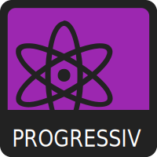
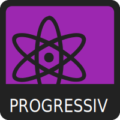

WIRTSCHAFT
DIPLOMATIE
ZIVIL
GESELLSCHAFT


 

8values ist im Wesentlichen ein politisches Quiz, das versucht, Prozentsätze für acht verschiedene politische Werte zu bestimmen. Es wird eine Aussage präsentiert, beantworte diese mit eigener Meinung über die Aussage, von Starke Zustimmung bis Starke Ablehnung, , wobei jede Antwort die Punktzahl geringfügig beeinflusst. Am Ende des Quiz werden die Antworten mit den maximal möglichen Werten verglichen, so dass ein Prozentsatz für das Ergebnis berechnet wird. Beantworte die Fragen aufrichtig!
Es gibt Fragen in diesem Test.
Es gibt vier unabhängige Achsen - die wirtschaftliche, die diplomatische, die zivile und die gesellschaftliche -, denen jeweils zwei gegensätzliche Werte zugewiesen sind. Sie sind:
GLEICHBERECHTIGUNG
Diejenigen mit höheren Gleichheitswerten glauben, dass die Wirtschaft den Wert gleichmäßig unter der Bevölkerung verteilen sollte. Sie neigen dazu, progressive Steuervorschriften, Sozialprogramme und bei hohen Werten auch den Sozialismus zu unterstützen.
WIRTSCHAFT
MÄRKTE
Diejenigen mit höheren Marktwerten glauben, dass die Wirtschaft auf schnelles Wachstum ausgerichtet sein sollte. Sie neigen dazu, niedrigere Steuern, Privatisierung, Deregulierung und - bei hohen Werten - Laissez-faire-Kapitalismus zu unterstützen.
NATIONAL
Menschen mit höheren National-Werten sind patriotisch und nationalistisch. Sie glauben oft an eine aggressive Außenpolitik und schätzen Militär, Stärke, Souveränität und - bei hohen Werten - territoriale Expansion.
DIPLOMATIC
GLOBAL
Diejenigen mit höheren Global-Werten sind kosmopolitisch und globalistisch. Sie glauben oft an eine friedliche Außenpolitik und betonen Diplomatie, Kooperation, Integration und bei hohen Werten eine Weltregierung.
FREIHEIT
Diejenigen mit höheren Werten für Freiheit glauben an starke bürgerliche Freiheiten. Sie neigen dazu, die Demokratie zu unterstützen und lehnen staatliche Eingriffe in das persönliche Leben ab. Beachten Sie, dass sich dies auf bürgerliche Freiheiten und nicht auf wirtschaftliche Freiheiten bezieht.
ZIVIL
AUTORITÄT
Personen mit höheren Autoritätswerten glauben an eine starke staatliche Macht. Sie neigen dazu, staatliche Eingriffe in das persönliche Leben, staatliche Überwachung und bei hohen Werten Zensur oder Autokratie zu unterstützen.
TRADITION
Diejenigen mit einem höheren Wert für Tradition glauben an traditionelle Werte und die strikte Einhaltung eines Moralkodex. Wenn auch nicht immer, so sind sie doch in der Regel religiös und unterstützen den Status quo oder den Status quo ante.
GESELLSCHAFT
FORTSCHRITT
Diejenigen mit höheren Fortschritt-Werten glauben an sozialen Wandel und Rationalität. Sie sind in der Regel säkular oder atheistisch und unterstützen Umweltschutzmaßnahmen und wissenschaftliche oder technologische Forschung, wenn auch nicht immer.
Neben der Zuordnung zu den acht Werten versucht das Quiz auch, Sie einer politischen Ideologie zuzuordnen. Diese ist noch in Arbeit und viel ungenauer als die Werte und Achsen, nehmen Sie sie also nicht zu ernst. Wenn Sie mit der Ihnen zugewiesenen Ideologie nicht einverstanden sind, senden Sie uns bitte eine E-Mail an eightvalues@gmail.com mit Ihren Ergebnissen, der zugewiesenen Ideologie und der bevorzugten Ideologie, damit wir das System anpassen können. Vielen Dank!
¯\_(ツ)_/¯
Wenn Sie Vorschläge oder konstruktive Kritik haben, senden Sie diese bitte an eightvalues@gmail.com or open an issue on the GitHub page here: GitHub Page